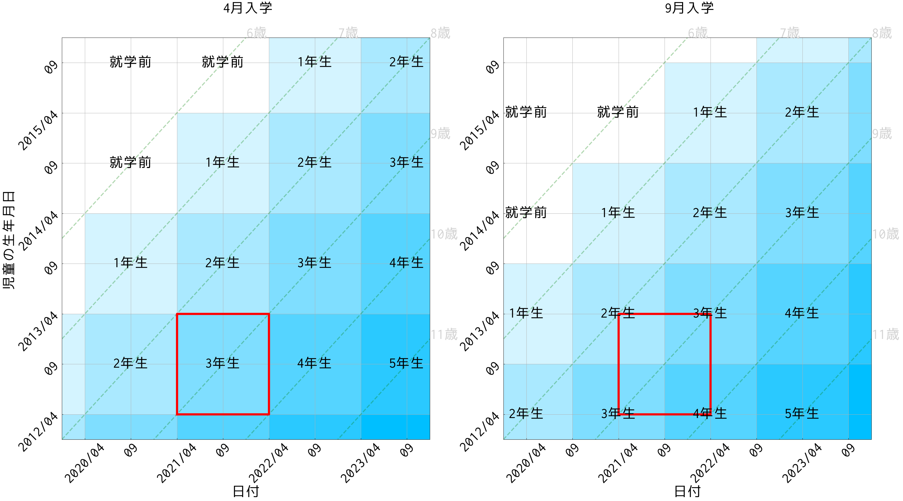
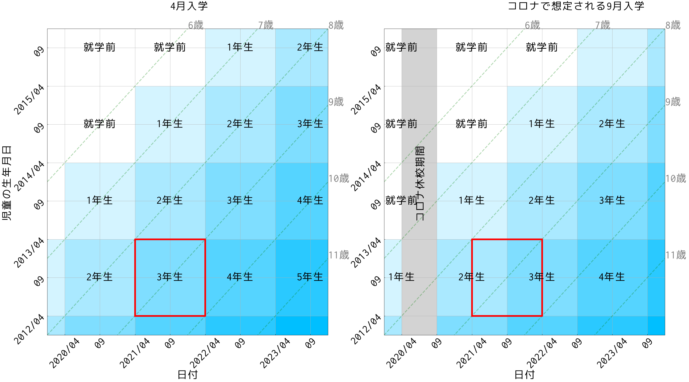

コロナ休校と「9月入学」
新型コロナの影響で休校期間が長引いており，カリキュラムへの影響が懸念されています．対応として，新入学と新学期のスタート時期を9月に変更するという案があります．
【コロナと学校】「9月入学」の検討状況を説明 文科相（読売新聞）
9月入学には，メリットが2つあります．
- コロナによる教育カリキュラムの遅れを，半年程度まで取り戻すことができる．
- 海外の教育スケジュールと一致する．留学生の往来が容易になる．
しかし，コロナの影響があるからといって，単純に9月入学に変更する案にはデメリットがあります． この記事では，そのデメリットを説明したいと思います．
生年月日と「4月入学」「9月入学」
そもそも，一般に，9月入学とはどのような制度で，4月入学とはどう違うのでしょうか． 一般に，「9月入学」と言った場合，下記の２つが想定されます．
- 入学・進級のタイミングについて，現在の「4月」から「9月」に変更する
- 一つの学年を構成する児童について，現在の「4月~3月生まれ」から「9月~8月生まれ」に変更する．
下のような図を書くとわかりやすいです． 図は，何年何月生まれの児童が（縦軸）いつ（横軸）どの小学校の学年になるかを例示したものです．

横軸は日付，縦軸は児童の生年月日です． 例えば，4月入学（左）の場合，縦軸の値が “2013/04” の点を右にたどることで，2013年4月生まれの児童は，2020年4月に入学し，2021年4月に2年生に，2022年4月に3年生になることがわかります． また，横軸の値が “2020/04” の点を上にたどれば，2020年4月に2年生になるのは，2012年4月から2013年3月生まれの児童であることがわかります．
これを9月入学（右）にした場合は，入学や進級のタイミングが半年ずれることがわかります（厳密には4月と9月の間は5ヶ月ですが，ここでは半年で単純化しています）． 一方で，一つの学年を構成する児童も変化します． したがって，例えば「全員が6歳0ヶ月~7歳0ヶ月で一年生になる」という点は現在の4月入学と変わりません．
コロナで検討されている「9月入学」
しかし，現在検討されている「9月入学」案は，この図とは異なるものです．つまり，
- 入学・進級のタイミングについて，現在の「4月」から「9月」に変更する
- 一つの学年を構成する児童について，現在の「4月~3月生まれ」のままに据え置く
2.がポイントです． 現在検討されている9月入学の主旨は，「休校によるカリキュラムの遅れに対し，スケジュールを半年後ろ倒しすることで対応する」というものです． したがって，学年の構成を変更することは想定されていないと考えられます． 図の上では，全体的に右にずれて表現されます．

グリッド（学年）と斜め線（年齢）の関係が変わってしまいましたね．つまり，各学年を構成する児童の年齢が変化します． 例えば，上で見た「現行の4月入学」「通常の9月入学」の場合は，どちらも一年生に入学するとき，児童の年齢は「6歳0ヶ月~7歳0ヶ月」でした． 一方で，今回の「コロナ対策の9月入学」の場合は，一年生に入学するとき，児童の年齢は「6歳6ヶ月~7歳6ヶ月」になります． 新入生が，これまでより半年だけ年寄りになるということです．
半年の差は無視してよいのか？
以上をまとめると，
- 4月入学（変更前）：小学1年生は平均7.0歳，小学2年生は平均8.0歳，…，高校3年生は平均18.0歳
- 9月入学（変更後）：小学1年生は平均7.5歳，小学2年生は平均8.5歳，…，高校3年生は平均18.5歳
となります． 9月入学に移行すると，日本全体で，九九を習うのも，微積分を習うのも，英語を習うのも，平均の上では半年遅くなるわけです． この影響をどう考えるか，は一つの論点であるべきです． たかが半年とも言えますが，若い時期の半年の影響の大きさは，よくわからないと言っていいでしょう． コロナの関係ない世代まで，教育を半年遅らせる必要があるのか，疑問です．